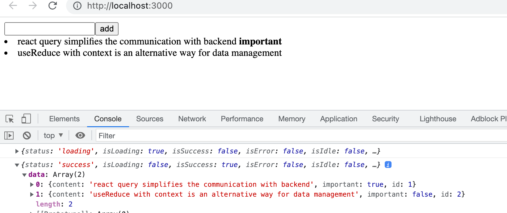
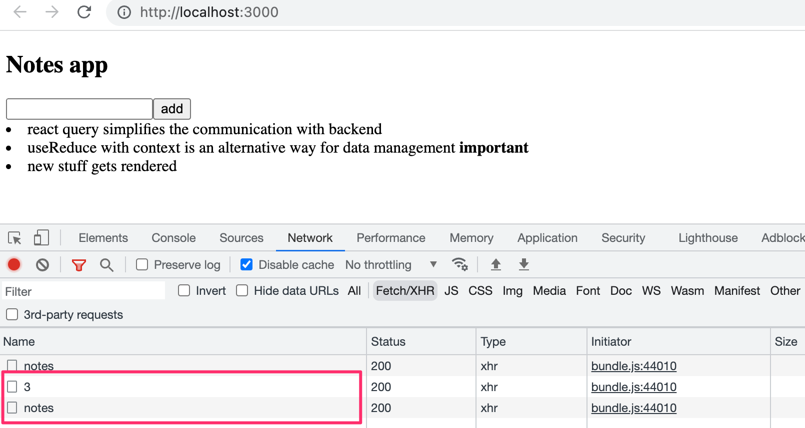
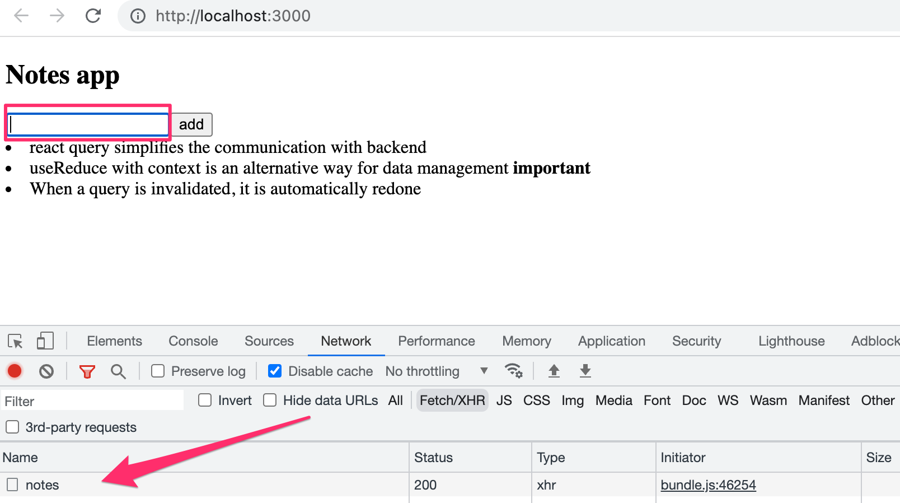
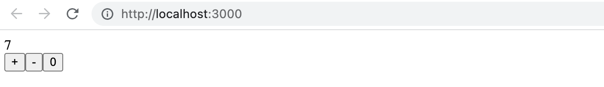
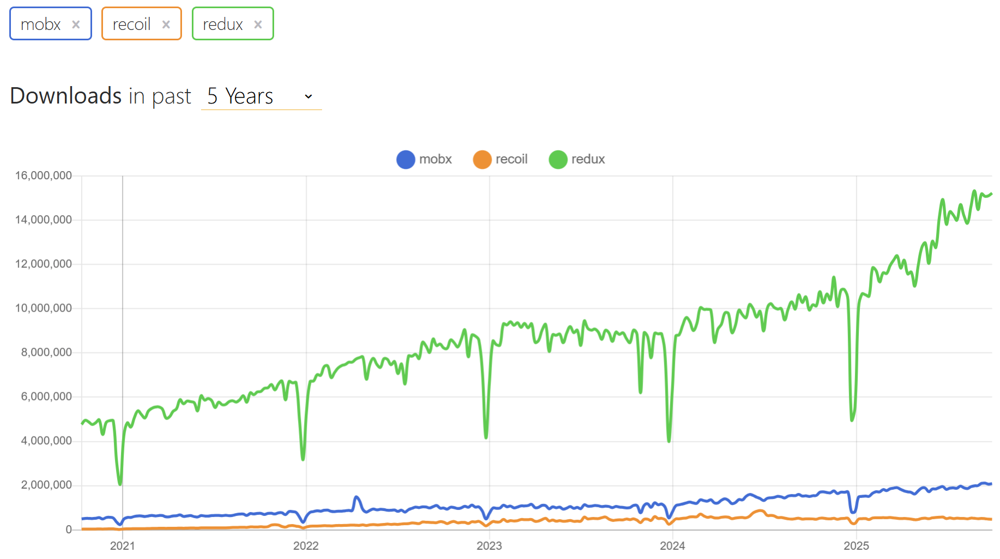

在本章结束，我们将会了解几种管理应用状态的不同方式。
我们继续回到 note 应用。这次我们将关注与服务器的通信。我们从头开始打造应用，它的第一版如下：
const App = () => {
const addNote = async (event) => {
event.preventDefault()
const content = event.target.note.value
event.target.note.value = ''
console.log(content)
}
const toggleImportance = (note) => {
console.log('toggle importance of', note.id)
}
const notes = []
return(
<div>
<h2>Notes app</h2>
<form onSubmit={addNote}>
<input name="note" />
<button type="submit">add</button>
</form>
{notes.map(note =>
<li key={note.id} onClick={() => toggleImportance(note)}>
{note.content}
<strong> {note.important ? 'important' : ''}</strong>
</li>
)}
</div>
)
}
export default App
初始代码可以在 GitHub 仓库 https://github.com/fullstack-hy2020/query-notes 中 part6-0 的分支中找到.
利用 React Query 管理服务器端数据
我们现在将用 React Query 存储并管理从服务器检索的数据。
用以下命令安装 React Query 库：
在 index.js 中需要增加一些内容，以便将这个库中的函数传递给整个应用。
import React from 'react'
import ReactDOM from 'react-dom/client'
import { QueryClient, QueryClientProvider } from 'react-query' // highlight-line
import App from './App'
const queryClient = new QueryClient() // highlight-line
ReactDOM.createRoot(document.getElementById('root')).render(
<QueryClientProvider client={queryClient}> // highlight-line
<App />
</QueryClientProvider> // highlight-line
)
我们现在就可以从 App 组件中获取笔记了。相关代码如下：
import { useQuery } from 'react-query' // highlight-line
import axios from 'axios' // highlight-line
const App = () => {
// ...
// highlight-start
const result = useQuery(
'notes',
() => axios.get('http://localhost:3001/notes').then(res => res.data)
)
console.log(result)
// highlight-end
// highlight-start
if ( result.isLoading ) {
return <div>loading data...</div>
}
// highlight-end
const notes = result.data // highlight-line
return (
// ...
)
}
从服务器中获取数据的方式和 Axios 的 get 方法类似。然而，Axios 的调用方法现在被包装在一个用 useQuery 函数形成的 query 查询中。在这个函数调用中，第一个参数（字符串 "notes" ）是已定义查询的 key，即笔记列表。
useQuery 函数的返回值是一个包含查询状态的对象。控制台中的输出展现了这个情境：

当组件第一次被渲染时，查询仍处于加载状态，即，相关的 HTTP 请求仍在等待中。在这个阶段，只有如下元素会被渲染：
<div>loading data...</div>
然而， HTTP 请求在瞬息之内完成，甚至最敏锐的人也无法看到这个文本。当请求完成后，这个组件会被重新渲染。在第二次渲染中，查询的状态为成功，而且，查询对象的 data 字段中包含了请求返回的数据，即，屏幕上显示的笔记列表。
因此，这个应用可以从服务器中获取数据并将其渲染到屏幕上，而完全不使用我们在第 2 章至第 5 章谈及的 React 钩子—— useState 和 useEffect。服务器中的数据现在完全在 React Query 库的管理下，应用程序完全不需要用 React 的 useState 钩子定义状态！
让我们将发出实际 HTTP 请求的函数，移动到单独的 requests.js 文件中。
import axios from 'axios'
export const getNotes = () =>
axios.get('http://localhost:3001/notes').then(res => res.data)
现在，APP 组件变得稍微简洁了。
import { useQuery } from 'react-query'
import { getNotes } from './requests' // highlight-line
const App = () => {
// ...
const result = useQuery('notes', getNotes) // highlight-line
// ...
}
The current code for the application is in GitHub in the branch part6-1.
当前应用的代码可以在 GitHub 上 part6-1 的分支中找到。
使用 React Query 将数据同步至服务器
数据已经成功地从服务器中检索出来。接下来，我们将确保对数据的新增和修改也会存储到服务器中。让我们从新增笔记开始。
让我们在 requests.js 中构建一个 createNote 函数，用以存储新笔记：
import axios from 'axios'
const baseUrl = 'http://localhost:3001/notes'
export const getNotes = () =>
axios.get(baseUrl).then(res => res.data)
export const createNote = newNote => // highlight-line
axios.post(baseUrl, newNote).then(res => res.data) // highlight-line
App 组件相应做出如下更新：
import { useQuery, useMutation } from 'react-query' // highlight-line
import { getNotes, createNote } from './requests' // highlight-line
const App = () => {
const newNoteMutation = useMutation(createNote) // highlight-line
const addNote = async (event) => {
event.preventDefault()
const content = event.target.note.value
event.target.note.value = ''
newNoteMutation.mutate({ content, important: true }) // highlight-line
}
//
}
为了新增一条笔记，我们需要用 useMutation 创建一个 mutation（突变）。
const newNoteMutation = useMutation(createNote)
useMutation 的参数即是我们在 requests.js 中添加的函数——它使用 Axios 向服务器发送一条新笔记。
事件处理器 addNote 在调用 mutation 对象中的 mutate 函数时，将新笔记作为参数传入，以执行 mutation ：
newNoteMutation.mutate({ content, important: true })
我们的解决方案挺不错，但仍有改进空间。新的笔记虽然存储在了服务器上，但并没有在屏幕上更新。
为了能渲染出新的笔记，我们需要告诉 React Query，应该使 key 为 notes 的旧查询结果 invalidated（无效）。
幸运的是，无效化很容易，它可以通过为 mutation 定义适当的 onSuccess 回调函数来完成：
import { useQuery, useMutation, useQueryClient } from 'react-query' // highlight-line
import { getNotes, createNote } from './requests'
const App = () => {
const queryClient = useQueryClient() // highlight-line
const newNoteMutation = useMutation(createNote, {
onSuccess: () => { // highlight-line
queryClient.invalidateQueries('notes') // highlight-line
},
})
// ...
}
在 mutation 已经成功执行后，一个函数被调用：
queryClient.invalidateQueries('notes')
这让 React Query 通过从服务器上获取笔记。自动更新 key 为 notes 的查询。因此，应用渲染了服务器上最新的状态，包括刚刚新增的笔记。
让我们加入更改笔记重要性的功能。更新笔记的函数被加入到文件 requests.js 中:
export const updateNote = updatedNote =>
axios.put(`${baseUrl}/${updatedNote.id}`, updatedNote).then(res => res.data)
更新笔记同样通过 mutation 来完成。App 组件扩展为如下：
import { useQuery, useMutation, useQueryClient } from 'react-query'
import { getNotes, createNote, updateNote } from './requests' // highlight-line
const App = () => {
// ...
const updateNoteMutation = useMutation(updateNote, {
onSuccess: () => {
queryClient.invalidateQueries('notes')
},
})
const toggleImportance = (note) => {
updateNoteMutation.mutate({...note, important: !note.important })
}
// ...
}
一个能够无效化查询的 mutation 被再次创建，更新后的笔记也可以正常渲染。使用 mutation 很轻松，mutate 方法接收一个笔记作为参数，这个笔记的重要性已变为旧值的反义。
当前应用的代码可以在 GitHub 上 part6-2 的分支中找到。
优化性能
应用目前运转良好，代码也相对简单。对笔记列表的更改也异常轻松。例如，当我们改变了笔记的重要性，使 key 为 notes 的查询无效即可更新应用中的数据。
const updateNoteMutation = useMutation(updateNote, {
onSuccess: () => {
queryClient.invalidateQueries('notes') // highlight-line
},
})
但这样的话，应用会在一个导致笔记更新的 PUT 请求后，创建一个 GET 请求向服务器获取数据。

如果应用从服务器中获取的数据量不大，这样的更新流程无关紧要。毕竟，从浏览器功能的角度来看，额外的一个 HTTP 请求并不重要，但在某些情况下，这可能会给服务器带来压力。
必要情况下，也可以通过 手动更新 React Query 所维护的查询状态，以实现性能优化。
对新增笔记的 mutation，做出如下更改：
const App = () => {
const queryClient = useQueryClient()
const newNoteMutation = useMutation(createNote, {
onSuccess: (newNote) => {
const notes = queryClient.getQueryData('notes') // highlight-line
queryClient.setQueryData('notes', notes.concat(newNote)) // highlight-line
}
})
// ...
}
在 onSuccess 的回调函数中，queryClient 对象首先读取已经存在的笔记状态，并加入在回调函数参数中获取到的新增笔记以实现更新。回调函数参数的值，即为在 requests.js 中定义的 createNote 函数所返回的值：
export const createNote = newNote =>
axios.post(baseUrl, newNote).then(res => res.data)
用类似的方法去更新笔记的重要性也相对简单，但我们把这留作一个可选练习。
如果我们仔细观察浏览器的网络面板，我们会注意到：当我们将光标移动至输入框时，React Query 会立即去获取全部笔记。

发生了什么？通过阅读 文档 ，我们注意到 React Query 查询的默认功能是：当窗口焦点，即应用中用户界面的活动元素，发生变化时，查询（其状态为 stale）会被更新。如果我们希望，我们可以按以下方式创建查询，以关闭这个功能：
const App = () => {
// ...
const result = useQuery('notes', getNotes, {
refetchOnWindowFocus: false // highlight-line
})
// ...
}
如果你在代码中放入 console.log，就会在浏览器的控制台中发现： React Query 引发的应用重复渲染是多么频繁。经验法则是，应在有需要的时候（即在查询状态发生变化时），才进行重新渲染。你可以在 这里 了解更多。
当前应用的代码可以在 GitHub 上 part6-3 的分支中找到。
React Query 一个多功能的库，根据我们已看到的情况，它简化了应用。那么，React Query 是否让更复杂的状态管理解决方案，如 Redux，变得无足轻重了呢？并非如此，在某些情况下，React Query 可以部分替代应用程序的状态，但是正如 文档 所说：
- React Query 是 服务器状态的库，负责管理服务器和客户端之间的异步操作。
- Redux 等则是客户端状态的库，可以用来存储异步数据，尽管效率不如 React Query 这样的工具。
因此，React Query 是一个在前端维护服务器状态的库，即作为服务器存储内容的缓存。React Query 简化了对服务器数据的处理，在某些情况下，可以消除将服务器数据存储在前端的需求。
大多数 React 应用不仅需要一种临时存储服务器数据的方法，还需要一些处理其他前端状态（例如表单和通知的状态）的解决方案。
useReducer
即使应用使用了 React query，通常还需要某种解决方案以管理前端的其他状态（例如，表单状态）。通常，利用 useState 创建的状态足以应对这种状况。使用 Redux 当然也没问题，但是我们还有其他选择。
让我们看一个简单的计数应用。这个应用显示计数器的值，并提供三个按钮以更新计数器的状态：

现在，我们利用 React 内置的 useReducer 钩子来进行状态管理，useReducer 钩子具有类似 Redux 的状态管理机制。代码如下：
import { useReducer } from 'react'
const counterReducer = (state, action) => {
switch (action.type) {
case "INC":
return state + 1
case "DEC":
return state - 1
case "ZERO":
return 0
default:
return state
}
}
const App = () => {
const [counter, counterDispatch] = useReducer(counterReducer, 0)
return (
<div>
<div>{counter}</div>
<div>
<button onClick={() => counterDispatch({ type: "INC"})}>+</button>
<button onClick={() => counterDispatch({ type: "DEC"})}>-</button>
<button onClick={() => counterDispatch({ type: "ZERO"})}>0</button>
</div>
</div>
)
}
export default App
useReducer 钩子提供了为应用创建状态的机制。创建一个状态所需的参数有：处理状态变化的 reducer 函数，以及状态的初始值:
const [counter, counterDispatch] = useReducer(counterReducer, 0)
处理状态变化的 reducer 函数和 Redux 中的 reducers 类似，即，用该函数获得当前状态和改变此状态的 action 作为参数。该函数根据 action 的类型和其中的内容而返回更新后的状态。
const counterReducer = (state, action) => {
switch (action.type) {
case "INC":
return state + 1
case "DEC":
return state - 1
case "ZERO":
return 0
default:
return state
}
}
在我们的例子中，action 只有类型这一个字段。如果动作的类型是 INC，它就会将计数器的值增加 1，其他也类似。正如 Redux 的 reducers，actions 也可以包含任意的数据，这些数据通常都被放在 payload 字段中。
useReducer 函数返回一个数组，该数组包含一个可以访问当前状态值的元素（数组的第一个元素），以及一个用于改变状态的 dispatch 函数（数组的第二个元素）：
const App = () => {
const [counter, counterDispatch] = useReducer(counterReducer, 0) // highlight-line
return (
<div>
<div>{counter}</div> // highlight-line
<div>
<button onClick={() => counterDispatch({ type: "INC" })}>+</button> // highlight-line
<button onClick={() => counterDispatch({ type: "DEC" })}>-</button>
<button onClick={() => counterDispatch({ type: "ZERO" })}>0</button>
</div>
</div>
)
}
我们对状态的更改顺利完成，正如利用 Redux 一样。恰当的状态改变类型被传入 dispatch 函数作为参数：
counterDispatch({ type: "INC" })
当前应用的代码可以在 GitHub 上 part6-1 的分支中找到。
使用 context 传递组件的状态
如果我们希望将应用拆分成多个组件，我们必须将计数器的值和用于管理它的 dispatch 函数也传递给其他组件。一个解决方案是将计数器的值和 dispatch 函数作为参数传递：
const Display = ({ counter }) => {
return <div>{counter}</div>
}
const Button = ({ dispatch, type, label }) => {
return (
<button onClick={() => dispatch({ type })}>
{label}
</button>
)
}
const App = () => {
const [counter, counterDispatch] = useReducer(counterReducer, 0)
return (
<div>
<Display counter={counter}/> // highlight-line
<div>
// highlight-start
<Button dispatch={counterDispatch} type='INC' label='+' />
<Button dispatch={counterDispatch} type='DEC' label='-' />
<Button dispatch={counterDispatch} type='ZERO' label='0' />
// highlight-end
</div>
</div>
)
}
这个解决方案是可行的，但并不是最优的。如果组件的结构变得更复杂，例如，需要经过多个组件才能将 dispatch 函数转发到真正需要它的组件，即使处于组件树中的其他组件都不需要它。这种现象被称为 prop drilling.
React 内置的 Context API 为我们提供了一个解决方案。React 的 context 类似应用的全局状态，应用中的组件均可以直接访问它。
现在，让我们在应用中创建一个 context，用以存储计数器的状态。
使用 React 的 createContext 钩子创建 context。让我们在文件 CounterContext.js 中创建 context:
import { createContext } from 'react'
const CounterContext = createContext()
export default CounterContext
App 组件现在可以通过如下的方式，向子组件提供 context:
import CounterContext from './CounterContext' // highlight-line
const App = () => {
const [counter, counterDispatch] = useReducer(counterReducer, 0)
return (
<CounterContext.Provider value={[counter, counterDispatch]}> // highlight-line
<Display counter={counter}/>
<div>
<Button type='INC' label='+' />
<Button type='DEC' label='-' />
<Button type='ZERO' label='0' />
</div>
</CounterContext.Provider> // highlight-line
)
}
可以看到，我们通过将子组件包裹在 CounterContext.Provider 组件中，并为 context 设置合适的值，以传递 context。
context 的值现在被设置为一个包含了计数器的值和 dispatch 函数的数组。
其他的组件现在可以通过使用 useContext 钩子来访问 context。
import { useContext } from 'react' // highlight-line
import CounterContext from './CounterContext'
const Display = () => {
const [counter, dispatch] = useContext(CounterContext) // highlight-line
return <div>
{counter}
</div>
}
const Button = ({ type, label }) => {
const [counter, dispatch] = useContext(CounterContext) // highlight-line
return (
<button onClick={() => dispatch({ type })}>
{label}
</button>
)
}
当前应用的代码可以在 GitHub 上 part6-2 的分支中找到。
在单独的文件中定义计数器的 context
我们的应用有个令人讨厌的特点：计数器一部分状态管理的功能，是在 APP 组件中定义的。现在，让我们将和计数器有关的内容，都移动到 CounterContext.js。
import { createContext, useReducer } from 'react'
const counterReducer = (state, action) => {
switch (action.type) {
case "INC":
return state + 1
case "DEC":
return state - 1
case "ZERO":
return 0
default:
return state
}
}
const CounterContext = createContext()
export const CounterContextProvider = (props) => {
const [counter, counterDispatch] = useReducer(counterReducer, 0)
return (
<CounterContext.Provider value={[counter, counterDispatch] }>
{props.children}
</CounterContext.Provider>
)
}
export default CounterContext
这个文件除了导出和 context 对应的 CounterContext 对象外，还导出了CounterContextProvider 组件，这个组件实际上是一个 context 提供方，它的值包括一个计数器和一个用于其状态管理的调度器。
让我们更新 index.js ，以启用 context 提供方：
import ReactDOM from 'react-dom/client'
import App from './App'
import { CounterContextProvider } from './CounterContext' // highlight-line
ReactDOM.createRoot(document.getElementById('root')).render(
<CounterContextProvider> // highlight-line
<App />
</CounterContextProvider> // highlight-line
)
现在，定义了计数器的值和功能的 context，可以被应用中的所有组件使用。
App 组件则被简化成如下的形式：
import Display from './components/Display'
import Button from './components/Button'
const App = () => {
return (
<div>
<Display />
<div>
<Button type='INC' label='+' />
<Button type='DEC' label='-' />
<Button type='ZERO' label='0' />
</div>
</div>
)
}
export default App
对 context 的使用仍然遵循先前的相同方法，例如， Button 组件可以通过如下的方式定义：
import { useContext } from 'react'
import CounterContext from '../CounterContext'
const Button = ({ type, label }) => {
const [counter, dispatch] = useContext(CounterContext)
return (
<button onClick={() => dispatch({ type })}>
{label}
</button>
)
}
export default Button
Button 组件仅需要计数器的 dispatch 函数，但是它也可以通过 useContext 从 context 中获取计数器的值：
const [counter, dispatch] = useContext(CounterContext)
这不是个大问题，但是我们可以通过在 CounterContext 文件中编写一些辅助函数，使我们的代码更加优雅和清晰：
import { createContext, useReducer, useContext } from 'react' // highlight-line
const CounterContext = createContext()
// ...
export const useCounterValue = () => {
const counterAndDispatch = useContext(CounterContext)
return counterAndDispatch[0]
}
export const useCounterDispatch = () => {
const counterAndDispatch = useContext(CounterContext)
return counterAndDispatch[1]
}
// ...
有了辅助函数的帮助，组件使用 context 就可以只获取它们所需要的那部分。Display 组件的更新如下：
import { useCounterValue } from '../CounterContext' // highlight-line
const Display = () => {
const counter = useCounterValue() // highlight-line
return <div>
{counter}
</div>
}
export default Display
Button 组件更新为：
import { useCounterDispatch } from '../CounterContext' // highlight-line
const Button = ({ type, label }) => {
const dispatch = useCounterDispatch() // highlight-line
return (
<button onClick={() => dispatch({ type })}>
{label}
</button>
)
}
export default Button
这个解决方案非常优雅。整个应用的状态，即，计数器的值和管理值的代码，已经独立放置于 CounterContext 文件中，这个文件提供了命名良好和易于使用的辅助函数来管理状态。
当前应用的代码可以在 GitHub 上 part6-3 的分支中找到。
作为一个技术细节，应当注意到辅助函数——useCounterValue 和 useCounterDispatch，是 自定义钩子（custom hooks），因为只能通过 React 组件或自定义钩子调用钩子函数——useContext。此外，自定义钩子是必须以 use 作为名称开头的 JavaScript 函数。我们将在这门课程的 part 7 更深入地探讨自定义钩子。
应该选择哪一个状态管理方案？
在 1 至 5 章中，应用的所有状态管理都通过 React 的钩子 —— useState 来处理. 偶尔，对后端的异步调用还需要用上 useEffect。通常情况下，我们就不再需要额外的东西了。
在使用 useState 作为状态管理解决方案时，存在一个微妙的问题：如果应用某部分状态被多个组件需要，那么该状态和对应的操作状态的函数，必须通过 props 在所有处理状态的组件中层层传递。有时，props 需要在多个组件中传递，虽然这些过程中的组件并不需要该状态。这种有些令人不快的现象叫做 prop drilling 。
过去几年中，一些针对 Rect 应用状态管理的替代方案开始显露头角，它们可用于解决棘手的状况（例如：prop drilling）。然而，目前还不存在一个终极方案，当下所有的方案都有其自己的优势和劣势，而且新的解决方案还在层出不穷。
这种状况可能让初学者、甚至经验丰富的网页开发者感到无所适从——究竟应该使用哪一种方案？
对于简单的应用，useState 是个很好的起点。如果应用需要和服务器进行通信的话，这样的通信可以用与 1 - 5 章中相同的方式处理——即利用应用本身的状态。然而最近，利用 React Query （或类似的库）去处理全部，或至少一部分，通信和相关的状态管理，已变得越来越普遍。如果你对 useState 及相应的 prop drilling 抱有疑虑，context 可能会是一个好的选择。在一些情境下，利用 useState 管理部分状态，同时使用 context 管理其他部分的状态，也会是合理的。
Redux 是其中最全面和强大的状态管理方案，它是实现所谓 Flux 架构的一种方式。Redux 比本章介绍的方案更有历史。Redux 过去的僵化成为了当前很多新状态管理工具的开发动力，例如 React 的 useReducer 。但在有了 Redux Toolkit 后，对 Redux 僵化的批评已经消散。
过去几年中，类似 Redux 的状态管理库层出不穷，比如新晋的 Recoil 和略老一些的 MobX。然而，根据 Npm 趋势，Redux 仍旧是主宰，而且甚至扩大了领先优势。

此外，Redux 不需要应用于整个应用。例如，当一个表单状态完全不影响应用的其他状态时，不使用 Reudx 去管理表单状态也是合理的。另外，在一个应用中，同时使用 Redux 和 React Query 也是完全可以接受的。
该选择哪一个状态管理方案？这个问题并不容易回答，也无法给出一个单一的正确答案。当应用增长到一定程度，此前的状态管理方案也可能成为一个次优的选择，即使该应用已经投入了生产使用。